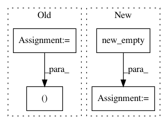

6437d4e459e0f56e059ef0400c03852ef91b8a32,torch_geometric/nn/pool/consecutive.py,,consecutive_cluster,#Any#,16
Before Change
key, perm = unique(src)
max_value = key.size(0)
dtype = _get_dtype(max_value)
arg = torch.empty((key[-1] + 1, ), dtype=dtype, device=src.device)
arg[key] = torch.arange(0, max_value, dtype=dtype, device=src.device)
out = arg[src.view(-1)]
out = out.view(size).long()
After Change
def consecutive_cluster(src):
unique, inv = torch.unique(src, sorted=True, return_inverse=True)
perm = torch.arange(inv.size(0), dtype=inv.dtype, device=inv.device)
perm = inv.new_empty(unique.size(0)).scatter_(0, inv, perm)
return inv, perm
In pattern: SUPERPATTERN
Frequency: 3
Non-data size: 4
Instances
Project Name: rusty1s/pytorch_geometric
Commit Name: 6437d4e459e0f56e059ef0400c03852ef91b8a32
Time: 2018-08-13
Author: matthias.fey@tu-dortmund.de
File Name: torch_geometric/nn/pool/consecutive.py
Class Name:
Method Name: consecutive_cluster
Project Name: rusty1s/pytorch_geometric
Commit Name: fab47fcca9887402f7474c80545311fcb952566f
Time: 2018-05-21
Author: matthias.fey@tu-dortmund.de
File Name: torch_geometric/transform/random_shear.py
Class Name: RandomShear
Method Name: __call__
Project Name: open-mmlab/mmcv
Commit Name: 48d990258549ca626fcf8c34488c00ed6fce108a
Time: 2021-02-26
Author: z55250825@163.com
File Name: mmcv/ops/nms.py
Class Name:
Method Name: soft_nms